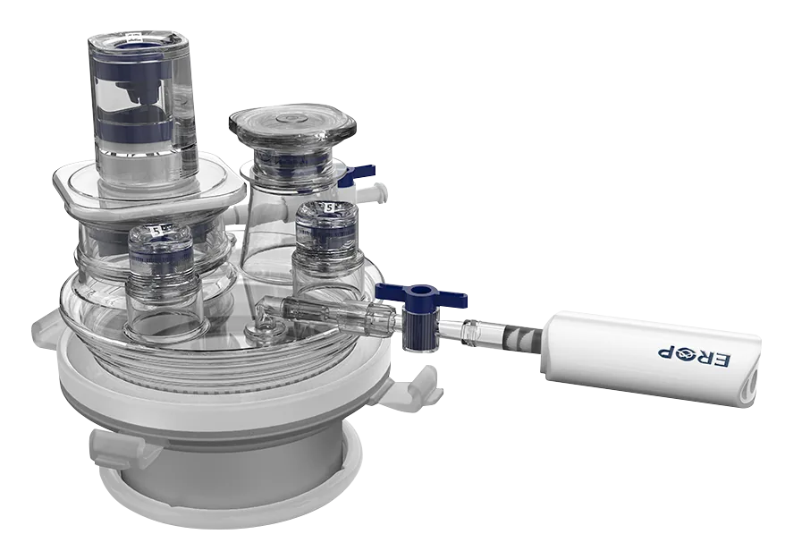

EROP New Port
Disposable surgical port device from EROP for laparoscopic workflows, supplied by K-Pick Trading Corp. K-Pick Trading Corp supplies this Korean medical device for hospitals, clinics, surgical teams, resellers, and healthcare procurement officers in the Philippines.

Models and specifications
- KSILS-2PA — 5 mm × 2, 135 mm
- KSILS-2PB — 5 mm + 12 mm, 135 mm
- KSILS-2PC — 12 mm × 2, 135 mm
- KSILS-3PA / 3PB / 3PC — 3-port, 135 mm
- KSILS-4PC — 12 mm × 3, 135 mm
Manufactured by EROP (Korea). Distributed in the Philippines by K-Pick Trading Corp, a PH FDA-licensed medical device distributor. See EROP certifications.
Minimally invasive transanal excision for rectal tumors: technical feasibility compared to conventional approach
The EROP New Port KSILS-2PB single-port device was used by surgeons at St. Vincent’s Hospital, Catholic University of Korea, in a study of 133 patients comparing minimally invasive and conventional transanal surgical technique. Mun JY, Geong GS, Yoo N, Kim HJ, Cho HM, Kye BH. Annals of Coloproctology 2025;41(2):162–168.
Read the full study on PubMed Central →